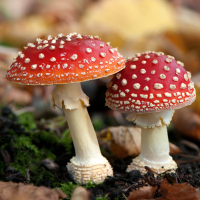
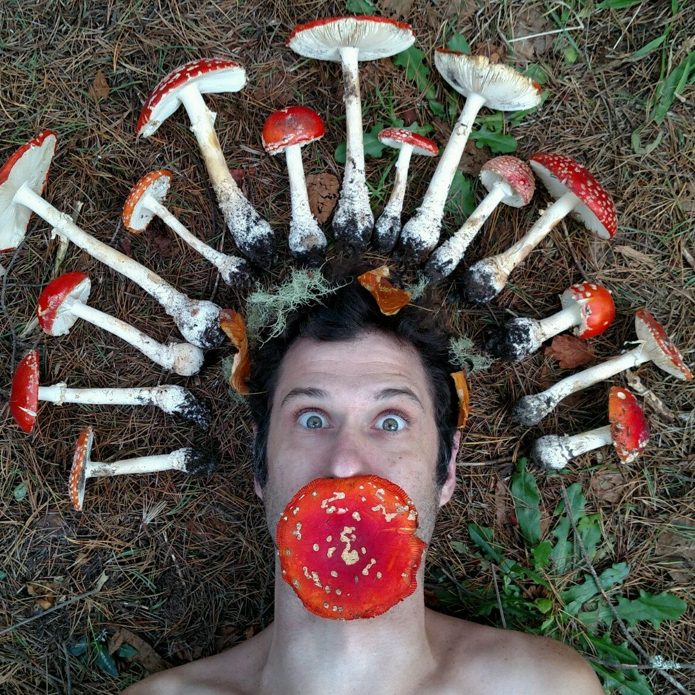

Цей гриб впізнає кожен, адже він дуже красивий: у нього – велика яскраво-червона шляпка з білими цяточками і струнка, довга ніжка
з воланом. Такий гриб добре помітний здалеку, його важко переплутати з іншими грибами.Спочатку капелюшок напівкруглий,
а потім починає розкриватися і стає плоским, а згодом навіть стає трохи увігнутим в центрі.З часом капелюшок починає світлішати
і в результаті стає вже не яскраво-червоним, а помаранчевим.Ніжка мухомора досить велика – у висоту виростає до 20 см,
а в діаметрі досягає 2-3 см. Ніжка мцхомора пряма, має циліндричну форму, трохи розширюється до нижнього краю. Мухомор росте
в лісах Північної півкулі – в Євразії та Північній Америці. Росте цей вид грибів під березами і ялинами, з’являється в другій половині
літа і росте аж до середини жовтня. Росте мухомор не тільки в долинах, а й в горах.Гриб так називається тому, що раніше, коли не було
засобів від мух, його використовували в якості отрути: заливали молоком і закривали ганчіркою так, щоб вона просочилася молоком.
Мухи сідали на ганчірку, пили отруєне молоко і гинули.
Мухомор – досить великий гриб з м’ясистим тілом і ніжкою. У молодих екземплярів капелюшок має куполоподібну форму, а в процесі росту
вона розкривається у вигляді парасольки. Ніжка мухомора розширена до основи, легко відділяється від капелюшка. Зверху ніжку обрамляє
«спідничка». Розмножується гриб мухомор спорами, що мають вигляд білого порошку.У сімействі мухоморів налічується понад 600 видів.
Колір мухомора залежить від його виду і віку. Капелюшки мухоморів можуть бути червоні, жовті, білі, зелені, коричневі, помаранчеві.
Найбільш відомими мухоморами є мухомор червоний, бліда поганка, смердючий мухомор, мухомор королівський, мухомор цезаря.
Майже всі мухомори дуже отруйні, найотрутнішим представником їх сімейства є бліда поганка.

Мухомор вважається отруйним грибом – якщо його з’їсти, то можна отруїтися і навіть
померти. Але різні лісові звірі – лосі, ведмеді і білки харчуються мухоморами, які їм не завдають ніякої шкоди. Існує багато видів
мухоморів, але найотруйнішим вважається гриб з червоним капелюшком. Найбільша концентрація отрути знаходиться в білих цятках
на капелюшку. Найбільше отрути міститься в молодих грибах. З віком кількість цяток на капелюшку зменшується, а значить,
зменшується і кількість отрути. Вважається, що отруйні гриби не їдять черв’яки. А червоні мухомори черв’яки їдять і роблять це дуже
охоче! Раніше, коли не було ніяких стимуляторів і біодобавок, робили настоянку з мухоморів і випивали її перед боєм. І воїни ставали
безстрашні і нечутливість до болю. Раніше на Русі багато хвороб лікували мухоморами, готуючи з них настойки і відвари.
Щоб по-справжньому отруїтися, дорослій людині треба з’їсти 13 – 15 червоних мухоморів. А дітям і людям похилого віку досить
буде одного шматочка.